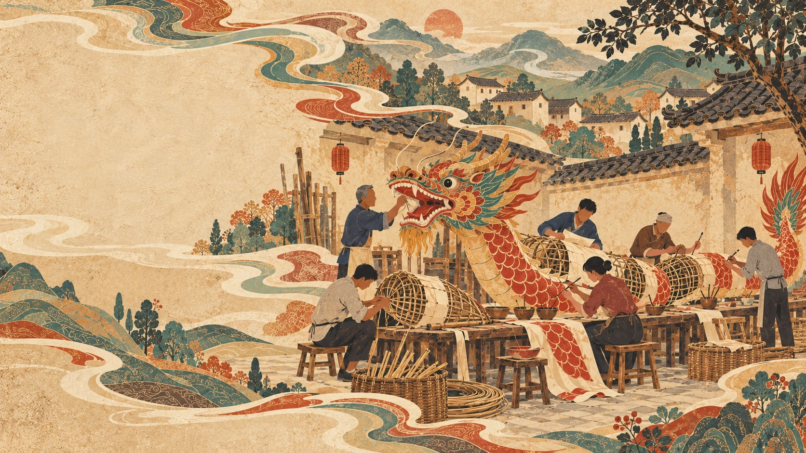
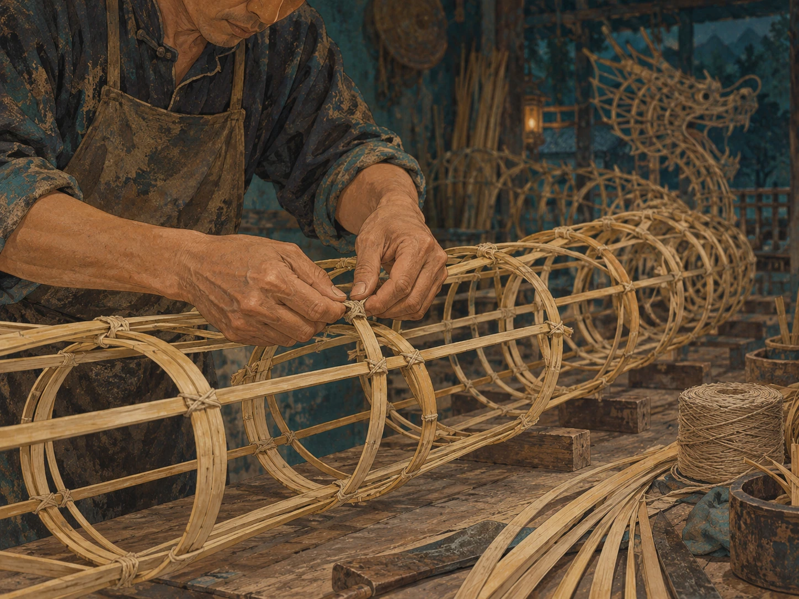
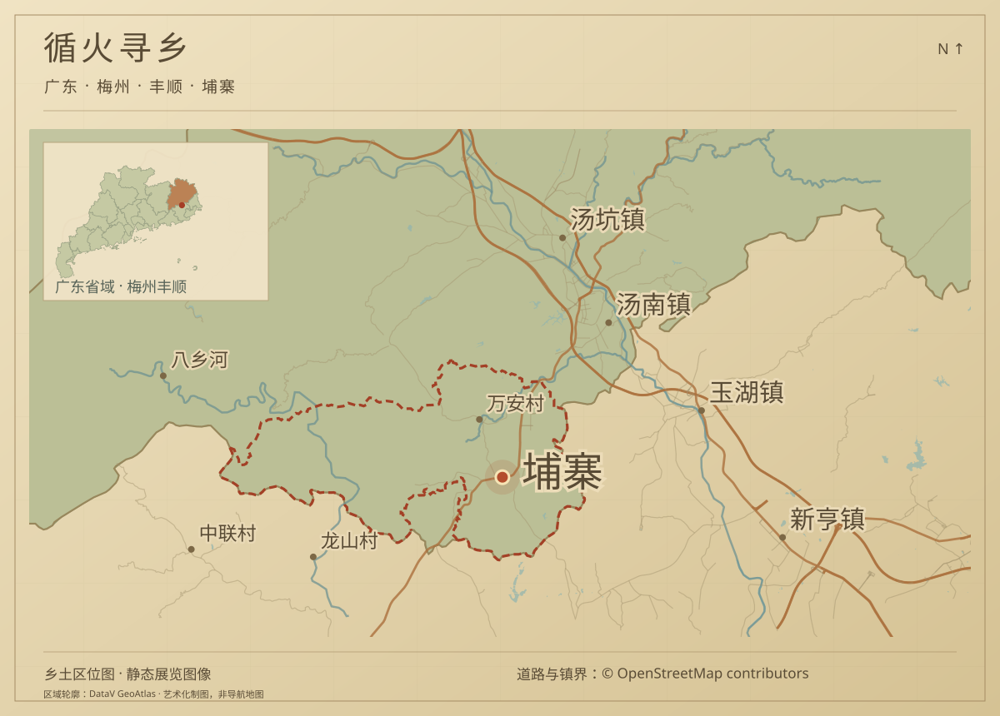

一指轻引，龙随光行。
移动鼠标或单指拖动，引导龙吻处的光珠拾取火种。每次随机收集 4–15 颗，会遇见一个龙舞招式。

一方水土，一村同心
一村同心，共成一龙。
在广东丰顺埔寨，村民共同出钱出力制作火龙。元宵之夜，一龙起舞，寄托丰收与平安的期盼。
竹篾扎结成骨，纸裱覆上龙身，色彩由双手一笔笔绘成。手艺在双手间接续，乡情在一夜火光中相聚。
三道手艺，成就一条火龙
让竹有骨，让纸有形，让鳞有光。
轻点工序，看一条火龙徐徐成形。
竹篾扎结成骨架，节段相连，构成可随舞动弯转的龙身。扎骨，是火龙造型的基础。


尾声 · 让烟火与你相遇
看过火龙，试着成为舞龙的人。
移动引龙，收集火种，点亮你的元宵夜。
六十秒静夜 · 循光成势
当前浏览器无法绘制火龙，请用 Chrome、Edge 或 Safari 打开。
移动鼠标或单指拖动，引导龙吻处的光珠拾取火种。每次随机收集 4–15 颗，会遇见一个龙舞招式。
沿宽光带依次行进，轻微偏离或快速划过也可识别。完成后花火盛放，再回到安静舞龙。
普通舞龙计时 60 秒；循迹和花火期间，余时暂停。下滑阅读说明时也会暂停，回到舞台后可继续。
↑ ↓ ← → / W A S D 引龙 空格 / P 暂停与继续 Esc 返回展览
可用 Tab 找到“引龙至下一落点”，按 Enter 逐步循迹；也可选择“稍后再舞”。
这一回，已拾火 0 颗，舞成 0 式。